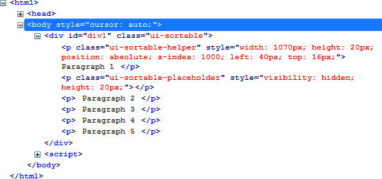
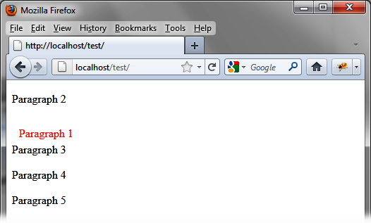

{% include JB/setup %}
{% raw %}
<div>
<div class="book" title="Formatting Content"><div class="book"><div class="book"><div class="book"><h1 class="title2"><a id="formatting_content-id9" class="calibre1"></a>Formatting Content</h1></div></div></div><p class="calibre7">The <code class="literal">sortable ()</code> method allows
    users to move the item selected by the mouse, and adds new CSS classes to
    the item being moved.</p><p class="calibre7">In <a class="ulink" href="ch12s02.html#html_generated_by_the_sortable_open_pare" title="Figure 12-2. HTML generated by the sortable () method">Figure 12-2</a>, for
    example, the <code class="literal">sortable ()</code> instruction
    changes the HTML and we start moving the first paragraph (this code was
    recovered by Firebug).</p><div class="figure"><a id="html_generated_by_the_sortable_open_pare" class="firstname"></a><div class="book"><div class="book"><a id="I_mediaobject12_d1e10945" class="firstname"></a></div></div><p class="title4">Figure 12-2. HTML generated by the sortable () method</p></div><p class="calibre7">The encompassing <code class="literal">&lt;div&gt;</code>
    element is assigned the <code class="literal">ui-sortable</code> CSS
    class, while the paragraph being moved is assigned the <code class="literal">ui-sortable-helper</code> class. Notice that jQuery UI
    created a <code class="literal">&lt;div&gt;</code> (<code class="literal">ui-sortable-placeholder</code> class) corresponding to
    the place left vacant when the paragraph was moved. This <code class="literal">&lt;div&gt;</code> moves progressively and will be
    removed from the page when the mouse button is released.</p><p class="calibre7">We can use CSS classes to customize the display. For example, if we
    change the <code class="literal">ui-sortable-helper</code> CSS class
    associated with the element that moves, we get a new look for the item
    being moved.</p><p class="calibre7">Modify these elements in the HTML by adding a <code class="literal">&lt;style&gt;</code> tag so that the paragraph being
    moved is displayed in red, becoming black at the end of displacement (see
    <span class="firstname"><a class="ulink" href="ch12s02.html#customized_elements" title="Figure 12-3. Customized elements">Figure 12-3</a>):</span></p><a id="I_programlisting12_d1e10984" class="firstname"></a><pre class="programlisting">&lt;script src = jquery.js&gt;&lt;/script&gt;
&lt;script src = jqueryui/js/jquery-ui-1.8.16.custom.min.js&gt;&lt;/script&gt;

&lt;link rel=stylesheet type=text/css
      href=jqueryui/css/smoothness/jquery-ui-1.8.16.custom.css /&gt;

<span class="firstname"><strong class="userinput">&lt;style type=text/css&gt;</strong></span>
  <span class="firstname"><strong class="userinput">p.ui-sortable-helper {</strong></span>
    <span class="firstname"><strong class="userinput">color : red;</strong></span>
  <span class="firstname"><strong class="userinput">}</strong></span>
<span class="firstname"><strong class="userinput">&lt;/style&gt;</strong></span>

&lt;div id=div1&gt;
  &lt;p&gt; Paragraph 1 &lt;/p&gt;
  &lt;p&gt; Paragraph 2 &lt;/p&gt;
  &lt;p&gt; Paragraph 3 &lt;/p&gt;
  &lt;p&gt; Paragraph 4 &lt;/p&gt;
  &lt;p&gt; Paragraph 5 &lt;/p&gt;
&lt;/div&gt;

&lt;script&gt;

$("#div1").sortable ();

&lt;/script&gt;</pre><div class="figure"><a id="customized_elements" class="firstname"></a><div class="book"><div class="book"><a id="I_mediaobject12_d1e11004" class="firstname"></a></div></div><p class="title4">Figure 12-3. Customized elements</p></div></div></div>

{% endraw %}

